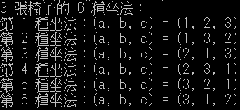
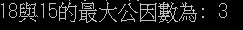

class p_three{
int count = 0;
void p_three(int x[], int low, int high){
int i, j, temp;
int [] y = new int[x.length];
if(low == high){
print_array(x);}
else{
for(i = 0; i < x.length; i++)
y[i] = x[i];
for(j = low; j <= high; j++){
temp = x[low];
x[low] = x[j];
x[j] = temp;
p_three(x, low + 1, high);
for(i = 0; i < x.length; i++)
x[i] = y[i];}
}
}
void print_array(int a[]){
int i;
count ++;
System.out.print("第 " + count + " 種坐法：(a, b, c) = (");
for(i = 0; i < a.length; i++){
System.out.print(a[i]);
if(i != a.length-1)
System.out.print(", ");}
System.out.println(")");}
}
public class Exam_31580_3{
public static void main(String args[]){
int [] x = {1, 2, 3} ;
p_three p = new p_three();
System.out.println("3 張椅子的 6 種坐法：");
p.p_three(x, 0, x.length - 1);}
}
import java.util.*;
class f {
int start;
public long fab(int n){
if(n==0){
return 0;}
else if(n==1){
return 1;}
else{
return fab(n-1)+fab(n-2);}
}
}
public class Mid_4 {
public static void main(String[] args){
//費式級數
f ff = new f();
System.out.print("當n=6的費式級數為: ");
System.out.println(ff.fab(6));}
}

import java.util.*;
class b{
public long gcd(int m, int n){
if((m%n) != 0){
return gcd(n, m%n);}
else{
return n;}
}
}
public class Mid_4 {
public static void main(String[] args){
//輾轉相除
b bb = new b();
System.out.print("18與15的最大公因數為: ");
System.out.println(bb.gcd(18,15));}
}